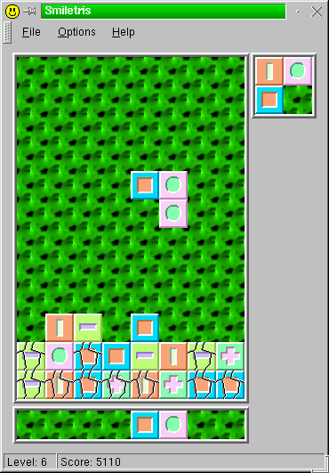

KSmiletris User Manual

KSmiletris is a Tetris-like game written for the K Desktop Environment
using the QT and KDE libraries. It has been tested under the Beta 4 release
of KDE and should be considered stable.
I release it under an open source code license. If you like this
program, send me a postcard from your hometown :-).
Sandro Sigala
Viale De Gasperi, 8
25041 Darfo Boario Terme
Brescia, Italy
How to play
The only keys you need to use are the four arrow keys plus the space bar.
The objective of the game is to control and to place the falling blocks,
so that two blocks vertically have matching patterns. This sequence and
the blocks behind are then removed, and the above blocks will fall down.
Where to find the sources
The main FTP site is ftp.vix.com,
where you can find the latest sources of this program plus the sources
of other programs written by me. The other available FTP site is KDE main
site ftp.kde.org, or any other
mirror.
License
/****************************************************************
Copyright (c) 1998 Sandro Sigala <ssigala@globalnet.it>.
All rights reserved.
Permission to use, copy, modify, and distribute this software
and its documentation for any purpose and without fee is hereby
granted, provided that the above copyright notice appear in all
copies and that both that the copyright notice and this
permission notice and warranty disclaimer appear in supporting
documentation, and that the name of the author not be used in
advertising or publicity pertaining to distribution of the
software without specific, written prior permission.
The author disclaim all warranties with regard to this
software, including all implied warranties of merchantability
and fitness. In no event shall the author be liable for any
special, indirect or consequential damages or any damages
whatsoever resulting from loss of use, data or profits, whether
in an action of contract, negligence or other tortious action,
arising out of or in connection with the use or performance of
this software.
****************************************************************/
Credits
Changes
Changes from version 0.4 to version 1.0
-
Fixed a Makefile bug, that prevented the icons from being distribuited
in the package.
-
Added sounds (the KDE interface is inadequate, though).
-
Added the High Score board.
Changes from version 0.3 to version 0.4
-
Updated the configure files synchronizing with the kexample
example of KDE SDK package.
-
As a consequence of the above change, the source files are renamed from
.cc to .cpp.
Changes from version 0.2 to version 0.3
-
Added a more nice breaking and deleting graphic sequence.
Changes from version 0.1 to version 0.2
-
The ~GameWidget() destructor was defined but not declared. This (correcly)
generates an error if compiled with EGCS.
-
Added automatic save and load of user options.
To Do
-
The KDE audio interface is inadequate for complex sound applications like
games. Need to find a best method for playing sounds.
-
Make the High Score board global, not local (this requires making the score
data globally writable).
-
Add keys redefinition support.
-
Comment the source code with kdoc.
-
Rewrite this documentation with the KDE SGML tools.
-
Internationalization.
Send comments to Sandro Sigala <ssigala@globalnet.it>